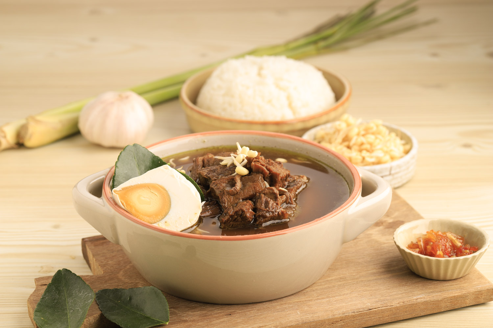

เมนูอาหารประเทศอินโดนีเชีย
2.Rawon

วัตถุดิบ
วัตถุดิบสำหรับRawon
- เนื้อปลาแมคเคอเรลสเปนบด 500 กรัม
- คุณสามารถใช้เนื้อปลาแล่อื่นๆ เช่น ปลาเฮอริ่ง ปลาสวาย
- ไข่แดง 3 ฟอง
- น้ำน้ำแข็ง 200 มล
- เกลือ 2 ช้อนโต๊ะ
- น้ำตาลทรายขาว 1 ช้อนโต๊ะ
- พริกไทยขาวป่น 1 ช้อนชา
- ผงกระเทียม 1 ช้อนชา
- น้ำมันพืช 3 ช้อนโต๊ะ
- สาคู/แป้งมันสำปะหลัง ประมาณ 800 – 1,000 กรัม
วัตถุดิบทำซุป
- น้ำตาลปี๊บ 250 กรัม
- น้ำตาลทรายขาว 2 ช้อนโต๊ะ
- กระเทียม 6 กลีบ ไม่ต้องปอกเปลือก
- พริกขี้หนู 25 กรัม
- เกลือ 1/2 ช้อนชา
- มะขามเปียก 1 ช้อนโต๊ะ (แล้วแต่ว่าอยากให้เปรี้ยวแค่ไหน)
- น้ำ 250 มล
วัตถุดิบสำหรับRawon
- แตงกวา
- บะหมี่ไข่ต้ม
- กุ้งแห้งบด
วิธีการทำ
- หั่นครึ่งต้นตะไคร้และทุบเบา ๆ
- ปั่นหอมแดง ข่า ถั่วเทียน กระเทียม ขิง และขมิ้นชันที่เตรียมไว้ให้เข้าเป็นเนื้อเดียวกัน
- หมักเนื้อที่เตรียมไว้ด้วยเกลือ พริกไทยดำบด และน้ำเลมอนให้ซึมเข้าสู่เนื้อ
- ตั้งหม้อและเติมน้ำมันลงไป เมื่อน้ำมันร้อน ให้นำเนื้อหมักลงไปจี่ในหม้อจนสุก จากนั้นนำออกมาพักไว้
- ใช้หม้อใบเดิมตั้งไฟและนำส่วนผสมที่ปั่นไว้ลงไปผัดประมาณ 10 นาทีจนแห้งและส่งกลิ่นหอม
- จากนั้นเติมน้ำสต๊อกไก่หรือสต๊อกเนื้อ และใส่เนื้อที่ผัดเตรียมไว้ลงไป ตุ๋นทิ้งไว้ประมาณ 40 นาทีจนเนื้อนุ่ม
- ปรุงรสด้วยเกลือ พริกไทย และคนให้เข้ากัน
- ตักใส่ถ้วยและแต่งหน้าด้วยผักชีซอย ต้นหอมซอย และหอมแดงทอด
- เสิร์ฟคู่กับข้าวเกรียบ ข้าวสวย และพริก Sambal Belachan
ย้อนกลับ